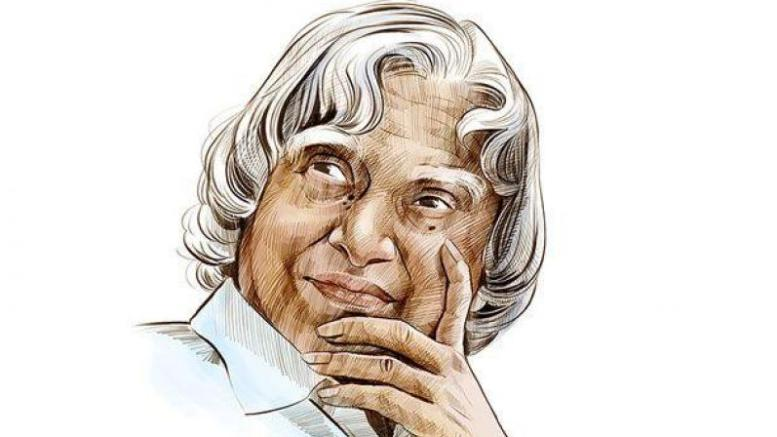

Dr A.P.J Abdul Kalam

Missile Man of India
Here is the little bit of Information about Dr. A.P.J Abdul Kalam
- 1931 - Avul Pakir Jainulabdeen Abdul Kalam was born into a Muslim family on October 15, 1931, on the island of Dhanushkodi off the southeastern coast of India.
- 1958 - Kalam instead joined the Defense Research and Development Organization (DRDO) as a senior scientific assistant in 1958
- 1969 - After moving to the newly formed Indian Space Research Organization (ISRO) in 1969, he was named project director of the SLV-III, the first satellite launch vehicle designed and produced on Indian soil.
- 1981 - He was granted the Padma Bhushan (1981)
- 1982 - Returning to the DRDO as director in 1982, Kalam implemented the Integrated Guided Missile Development Program. And built few powerful missiles.
- 1990 - He was granted the Padma Vibhushan (1990).
- 1992 - He then became the senior scientific adviser to India's defense minister in 1992, a position he used to campaign for the development of nuclear tests.
- 1997 - The Bharat Ratna (1997). India's highest civilian awards for his contributions in modernizing government defense technology.
- 1998 - Kalam was a key figure in the May 1998 Pokhran-II tests, in which five nuclear devices were detonated in the Rajasthan Desert.
- 1999 - He also wrote several books, including the autobiography Wings of Fire in 1999.
- 2002 - In 2002, India's ruling National Democratic Alliance helped Kalam win an election against Lakshmi Sahgal and become India's 11th president.
- 2012 - He formed the "What Can I Give Movement" in 2011 with the goal of creating a compassionate society, and in 2012, his efforts to improve healthcare led to the release of a tablet for medical personnel to use in remote areas.
- 2015 - On July 27, 2015, Kalam suffered a massive heart attack while lecturing at the Indian Institute of Management and subsequently died at the age of 83.
--Dr. A.P.J Abdul Kalam"Never stop fighting until you arrive at your destined place - that is, the unique you. Have an aim in life, continuously acquire knowledge, work hard, and have perseverance to realise the great life."